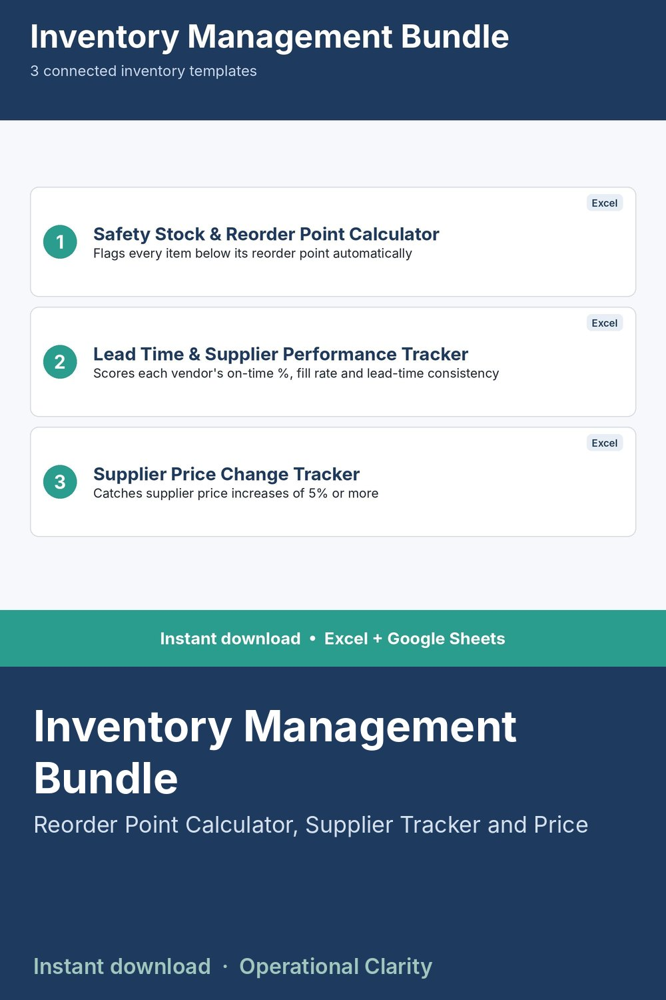

Inventory Management Bundle

THE COMPLETE INVENTORY MANAGEMENT TOOLKIT - 3 TEMPLATES, ONE PRICE.
This bundle contains all 3 of our inventory management templates together, at a lower combined price than buying them separately.
WHAT'S INCLUDED
1. Safety Stock and Reorder Point Calculator - real industry-standard combined-variability formula, auto-flags items below reorder point
2. Lead Time and Supplier Performance Tracker - auto-scores every vendor's on-time %, fill rate, and lead time consistency
3. Supplier Price Change Tracker - auto-detects price increases of 5%+ so nothing slips past you
These three work together: the Lead Time Tracker's vendor scorecard output feeds directly into the Safety Stock Calculator's lead time inputs.
WHAT'S INCLUDED PER TEMPLATE
- Excel file (.xlsx) - no macros, works in Excel 2010+
- Start Here tab with plain-English setup instructions
- Sample data included
WHO THIS IS FOR
Small business owners and inventory/purchasing managers who want a complete, connected system instead of three separate one-off tools.
INSTANT DOWNLOAD - no physical item will be shipped. Because this is a digital product, all sales are final.